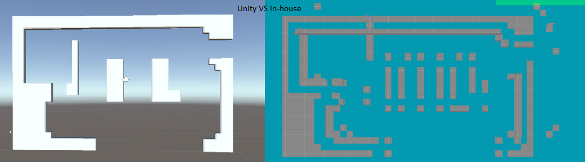

Level Loading
For this project, I was responsible for handling the transfer of a Unity scene into our in-house
engine using JSON. However, during the implementation process, we encountered some issues that
needed to be resolved.
The first problem we encountered was a pivot issue that had not been previously identified. This
issue caused a significant offset in the positioning of objects within the scene. I worked to
identify and resolve this issue by adjusting the pivot points of the affected objects.

The second issue we encountered was a difference in how the two engines measured distance. This
caused a discrepancy in the positioning of objects, which affected the overall gameplay. To fix this
issue, we had to multiply all the positions in the Unity scene by 100 to make them consistent with
the in-house engine.
I worked diligently to ensure that the transfer of the Unity scene into our in-house engine
was seamless and met the project requirements. Despite the challenges we encountered, we were able
to successfully implement the necessary changes to ensure that the game functioned properly.
Shader
As part of my contributions to this project, I modified the in-house shader system to give a more
toon style visual effect to the game.
To achieve this, I made changes to the lighting and shading in the game, adding a cartoon-like
appearance to the characters and environments. This took me approximately 12 hours to complete, as
it required a significant amount of experimentation and tweaking to achieve the desired effect.
The toon style visuals added a unique and visually appealing element to the game, which helped to
enhance the overall gameplay experience. Players were able to engage with the game in a new and
exciting way, and the modification of the shader system was instrumental in achieving this. The toon
style visuals were a key element of my work on the project.
GamePlay
As part of my contributions to the gameplay in this project, I added several features to enhance the
player experience.
The first feature I added was Dashreset. This allowed players to
reset their dash ability, which added a new level of strategy and gameplay mechanics.
Next, I added Collectables. This feature allowed players to
collect items scattered throughout the game, which added a new layer of challenge and increased the
overall replay value of the game.
Finally, I added Springboard. This feature enabled players to
jump higher in certain areas of the game, which provided new opportunities for exploration and added
to the overall fun of the gameplay.
These features added new challenges and opportunities for players to engage with the game,